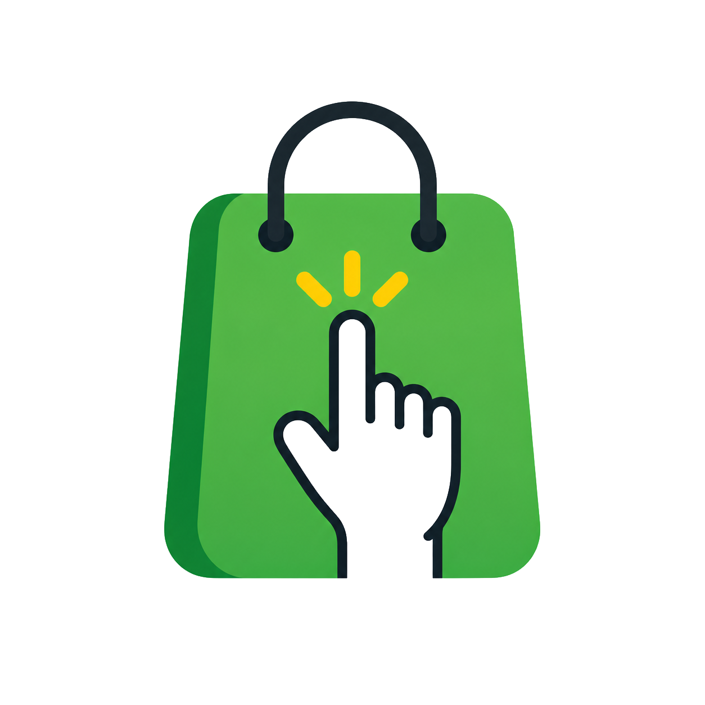

Stocke al Toque
Del cuaderno a tu celular.
SaaS de gestión comercial de Nware Soluciones para pequeños negocios. Reúne inventario, ventas, cuentas corrientes, proveedores y vencimientos en una aplicación web accesible desde el celular o la computadora.
El problema
Muchos comercios manejan su stock en planillas sueltas, cuadernos o sistemas viejos que no se comunican entre sí. Esto genera errores de precios, pedidos duplicados a proveedores y falta de visibilidad sobre qué se tiene y qué falta.
La solución
Una plataforma web centralizada donde se gestiona el inventario, se vinculan proveedores a productos, se actualizan precios de forma controlada y se llevan las cuentas asociadas a cada movimiento — todo desde una interfaz pensada para gente que no es técnica.
Stack técnico
- Python y FastAPI: backend y API REST
- PostgreSQL, SQLAlchemy y Alembic: datos y migraciones
- HTML, CSS y JavaScript: interfaz PWA
- Arquitectura para múltiples negocios y autenticación
Estado actual
Producto con sitio comercial público, registro y documentación disponibles. Continúo trabajando en su desarrollo y mantenimiento, con funcionalidades de gestión de planes, respaldo e importación y exportación de productos.